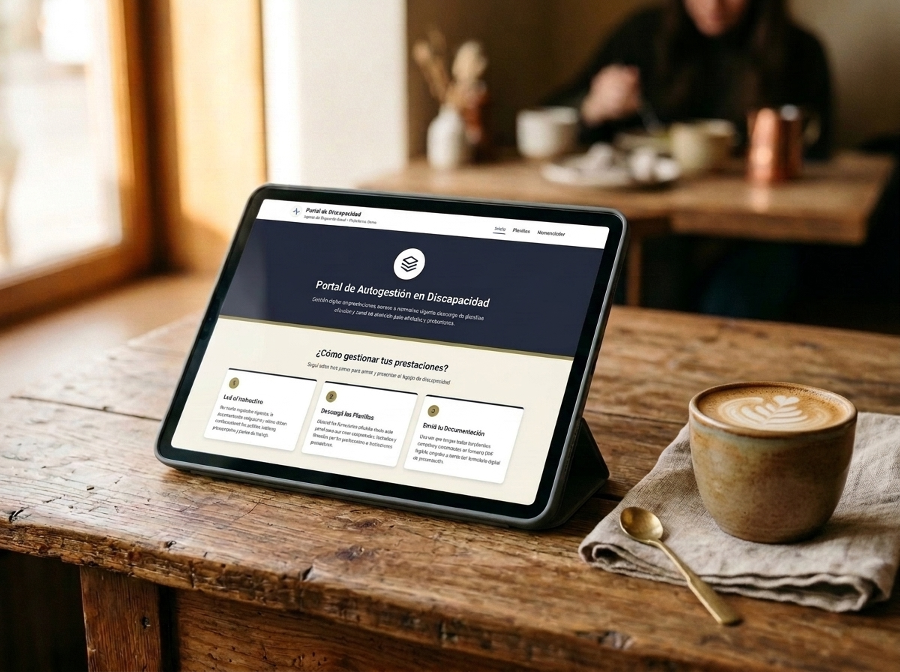

Portal Web de
Autogestión
Canal centralizado para prestadores y afiliados: descarga de instructivos, envío de planillas y consultas de facturas automatizadas por correo.
Visualizar demoDesarrollo soluciones tecnológicas para entidades de salud que simplifican la auditoría, las gestiones contables y mejoran la experiencia del usuario.
Ver proyectos 2027Conozco de primera mano el estrés de los plazos y vencimientos de la SSSalud, los amparos y los biblioratos colapsados en auditoría. Diseño software para resolver problemas reales con los que convivo todos los días.
Combinando mi experiencia en administración de salud con formación en Ciencia de Datos y desarrollo de sistemas, construyo herramientas modulares que despapelizan, automatizan validaciones y previenen errores antes de las presentaciones formales.
Especializado en discapacidad y Mecanismo de Integración (SURGE)
Automatizaciones inteligentes y portales web de autogestion para afiliados
Enfoque centrado en aliviar la carga operativa y mejorar la experiencia de auditores y prestadores

Canal centralizado para prestadores y afiliados: descarga de instructivos, envío de planillas y consultas de facturas automatizadas por correo.
Visualizar demoSistema que procesa y carga PDF de forma integral y masiva. Toma PDFs, extrae su códigos QR y texto mediante OCR, cruzando CUIT, CUIL y períodos para generar TXTs listos para la Superintendencia.
Probar demoHerramienta de control anticipado que simula el FTP de la SSSalud, verifica libros IVA y proyecta errores en la presentacion y subsidios antes del cierre para evitar rechazos tardíos.
Probar demoCada error en la carga manual de expedientes o en el tipeo de códigos de prestación se traduce en horas de retrabajo, demoras en las auditorías y sobrecostos administrativos evitables.
Optimización de procesos para eliminar la fricción del papel.
Automatizar las validaciones y el procesamiento de comprobantes reduce drásticamente el margen de error humano, protegiendo los recursos de la entidad y asegurando cierres previsibles.
Eficiencia económica y previsibilidad.
¿Tu obra social o prepaga busca optimizar los circuitos de discapacidad y despapelar la auditoría? Hablemos sobre soluciones a medida.
Enviar mensajeLas herramientas están pensadas para acoplarse de forma modular a la operatoria actual de la entidad, permitiendo una adopción progresiva sin fricción para el personal administrativo.
Ofrecemos desde portales web de autogestión con implementacion inmediata hasta sistemas administrativos completos de implementación modular, enfocados específicamente en el Mecanismo de Integración.
Podes ponerte en contacto directo a través de correo electrónico para coordinar un espacio de intercambio enfocado en los requerimientos específicos de tu institución.